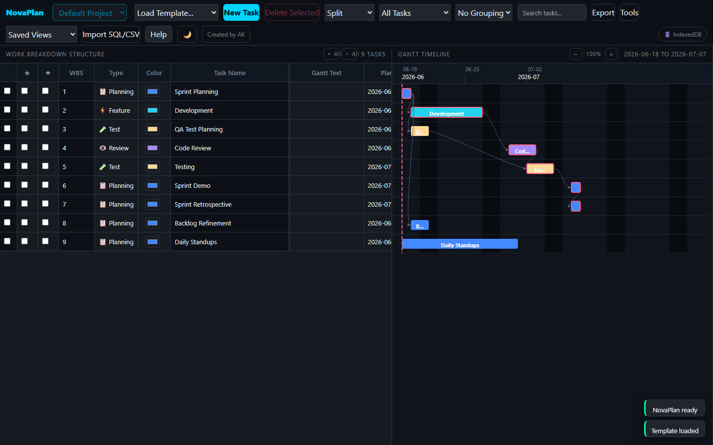

NovaPlan is a complete project management tool packed into a single HTML file. Gantt chart, WBS, critical path, Kanban, sprints, and more — no sign-up, no server, runs offline.
One click. No install. Runs in Chrome, Firefox, Edge, or Safari.

Everything you need
Colour-coded bars, dependency arrows, progress fills, baseline tracks, milestones, and 8 zoom levels (25%–400%). Hand-built SVG renderer — no third-party charting library.
Unlimited task nesting with automatic roll-up of dates, hours, and progress to parent (summary) rows. WBS codes (1.2.3) used in dependency syntax.
Automatic forward/backward pass with total-float calculation, critical and near-critical flagging, and dependency types FS, SS, FF, SF with lead/lag.
Create sprints, assign tasks, use Kanban drag-and-drop, and filter by Current Sprint. Sprint view shows total hours and team size per sprint.
Split, Grid, Gantt, Board (Kanban), Sprint, Dashboard, Workload, and RAID. Saved Views let you bookmark your favourite mode + filter + grouping combination.
SQL backup, CSV, Jira CSV, MS Project XML, multi-sheet Excel (7 sheets), and animated Gantt GIF. Import CSV or SQL to restore or migrate plans.
Auto-selects OPFS → IndexedDB → localStorage. Your data is stored locally and never uploaded. Works with file://, localhost, or any static host.
Track Risks, Assumptions, Issues, Dependencies, and Decisions. Every entry is timestamped and exported to Excel. Change log gives you a full audit trail.
Snapshot your current plan before making changes, then compare any two scenarios side by side to see how many tasks shifted and by how much.
Get started in 30 seconds
Click Launch Free App above, or download NovaPlan.html and open it by double-clicking. No install, no build step.
Click Load Template… → Agile Sprint Plan to see a fully wired example with 9 tasks, dependencies, and Gantt bars — or click New Task to start blank.
Dates, types, resources, status, and progress are all inline-editable. The Gantt chart updates in real time as you edit.
Download a multi-sheet Excel workbook, a Jira-ready CSV, an MS Project XML, or an animated Gantt GIF for presentations.
Why NovaPlan
| Feature | NovaPlan | MS Project | Jira | Trello |
|---|---|---|---|---|
| Cost | Free | $10+/mo | $8+/mo | Free tier |
| Zero install | ✓ | ✗ | ✗ | ✓ |
| Offline / file-based | ✓ | ✓ | ✗ | ✗ |
| Gantt chart | ✓ | ✓ | Add-on | ✗ |
| Critical Path (CPM) | ✓ | ✓ | ✗ | ✗ |
| WBS hierarchy | ✓ | ✓ | Epics only | ✗ |
| Kanban board | ✓ | ✗ | ✓ | ✓ |
| Sprint planning | ✓ | ✗ | ✓ | Power-Up |
| Data privacy (local) | ✓ | ✓ | ✗ | ✗ |
| Single file | ✓ | ✗ | ✗ | ✗ |